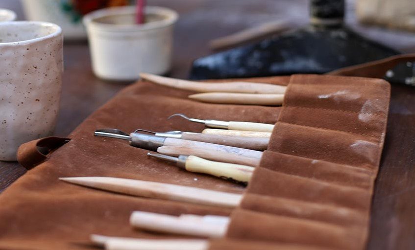
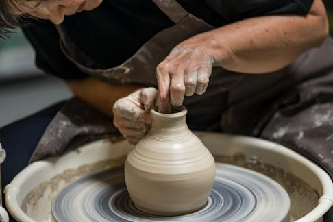
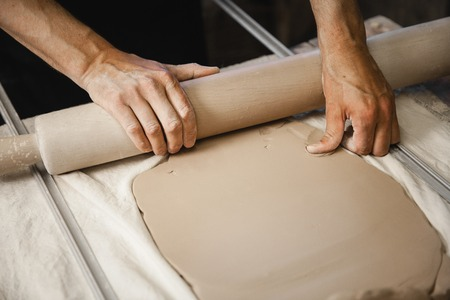
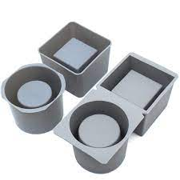
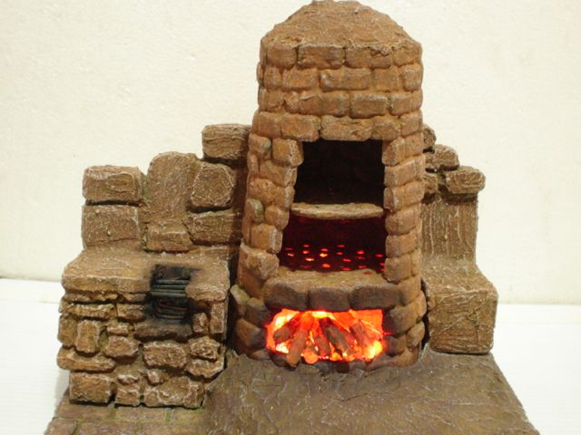
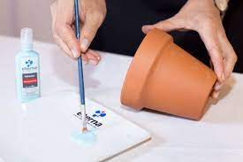

Arcilla
Puede ser una mezcla de diferentes tipos de arcillas que se seleccionan por sus propiedades de textura y plasticidad.

Herramientas de modelado
Para dar forma a la arcilla, se utilizan herramientas de modelado como cuchillos, espátulas, alambres y otras herramientas especiales que ayudan a esculpir y dar forma a la maceta.

Torno de alfarero
Los alfareros a menudo utilizan un torno de alfarero para dar forma a la arcilla en la rueda de alfarero. Esto permite crear formas más uniformes y simétricas.

Rodillo
Un rodillo se utiliza para aplanar la arcilla y crear láminas uniformes que se pueden cortar y moldear para formar la estructura de la maceta.

Moldes
En algunos casos, se pueden utilizar moldes o formas preexistentes para crear macetas con diseños específicos.

Horno
La maceta se coloca en un horno de alfarero y se cuece a altas temperaturas, generalmente alrededor de 900 a 1200 grados Celsius. Esto endurece la arcilla y la convierte en cerámica.

Pintura
Es posible añadir una capa de esmalte a la maceta con el propósito de otorgarle color, un acabado brillante y una capa de protección adicional.